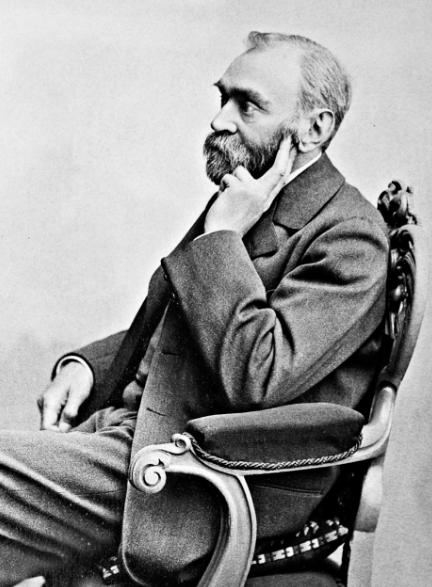
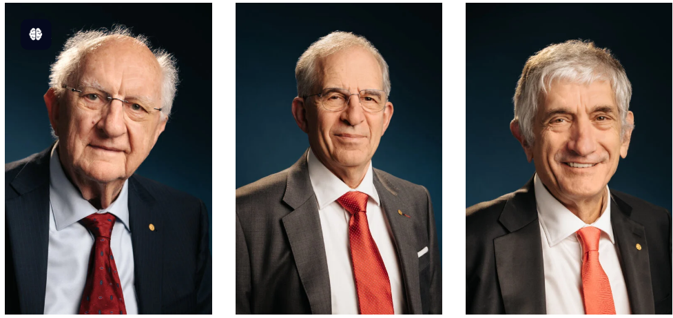
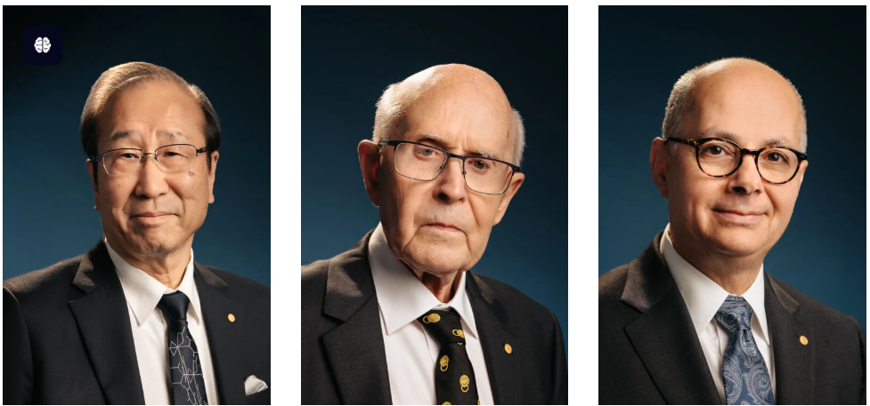
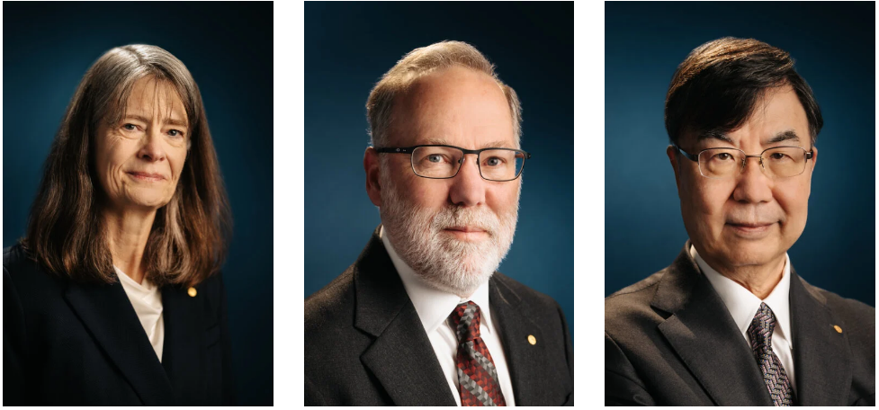
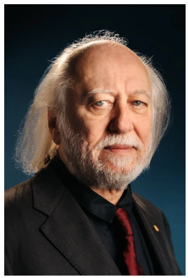
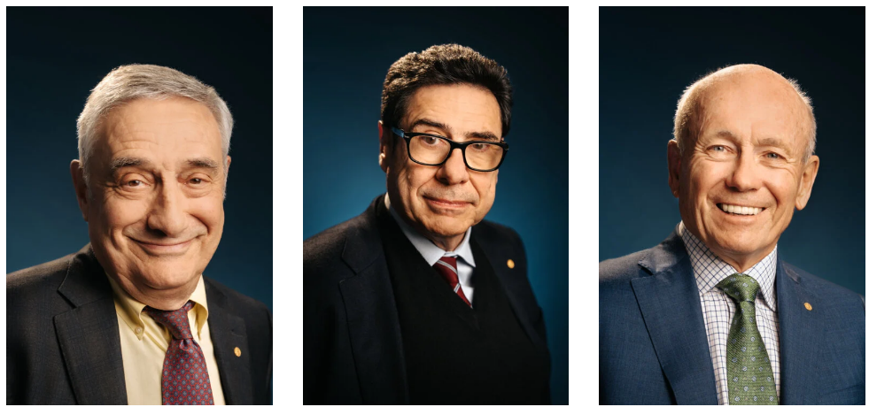

Nobel Prize: History, Story Behind It, Interesting Facts, Categories & Latest Winners (Updated 2026)
📚 Published by: Saraswat Academy

The Nobel Prize is regarded as one of the world's highest honours. Every year it recognises individuals and organisations whose work has made an outstanding contribution to humanity.
Who Started the Nobel Prize?
The Nobel Prize was established by Alfred Nobel, a Swedish chemist, engineer, inventor and industrialist. Born on 21 October 1833 in Stockholm, he held 355 patents during his lifetime and became famous for inventing dynamite.
The Story Behind the Nobel Prize
In 1888, Alfred Nobel's brother Ludvig Nobel died. A French newspaper mistakenly believed Alfred Nobel had died and published an obituary describing him as:
"The Merchant of Death is Dead."
The newspaper criticised Nobel because his invention, dynamite, had been used in warfare and destruction. Reading his own mistaken obituary shocked Alfred Nobel. He realised that history might remember him only for creating powerful explosives.
Determined to leave a better legacy, he decided that his wealth should reward people whose work benefits humanity. This decision became the foundation of the Nobel Prize.
Alfred Nobel's Will
- Final will signed: 27 November 1895
- Died: 10 December 1896
- About 94% of his fortune was left to establish Nobel Prizes.
- The first Nobel Prizes were awarded in 1901.
Nobel Prize Categories
| Category | Started |
|---|---|
| Physics | 1901 |
| Chemistry | 1901 |
| Physiology or Medicine | 1901 |
| Literature | 1901 |
| Peace | 1901 |
| Economic Sciences | 1969 |
Who Selects the Winners?
| Prize | Awarding Institution |
|---|---|
| Physics | Royal Swedish Academy of Sciences |
| Chemistry | Royal Swedish Academy of Sciences |
| Medicine | Nobel Assembly at Karolinska Institute |
| Literature | Swedish Academy |
| Peace | Norwegian Nobel Committee |
| Economics | Royal Swedish Academy of Sciences |
Nobel Prize Ceremony
The prizes are awarded every year on 10 December, the death anniversary of Alfred Nobel. Most ceremonies take place in Stockholm, Sweden, while the Nobel Peace Prize is awarded in Oslo, Norway.
10 Interesting Facts About the Nobel Prize
- A Nobel Prize can usually be shared by up to three people.
- The Peace Prize can also be awarded to organisations.
- The medal is made of 18-carat green gold coated with 24-carat gold.
- Nominations remain secret for 50 years.
- Self-nominations are not allowed.
- The first Nobel Prizes were awarded in 1901.
- Malala Yousafzai became the youngest Nobel laureate at age 17.
- John B. Goodenough became the oldest Nobel laureate at age 97.
- Marie Curie won two Nobel Prizes in different sciences.
- Every winner receives a medal, diploma and prize money.
Indian Nobel Laureates
| Year | Name | Category |
|---|---|---|
| 1913 | Rabindranath Tagore | Literature |
| 1930 | C. V. Raman | Physics |
| 1968 | Har Gobind Khorana | Medicine |
| 1979 | Mother Teresa | Peace |
| 1983 | Subrahmanyan Chandrasekhar | Physics |
| 1998 | Amartya Sen | Economics |
| 2009 | Venkatraman Ramakrishnan | Chemistry |
| 2014 | Kailash Satyarthi | Peace |
| 2019 | Abhijit Banerjee | Economics |
Latest Nobel Prize Winners (2025)
Nobel Prize Winners 2025
| Category | Photo | Winner(s) | Achievement |
|---|---|---|---|
| Physics |
 |
John Clarke Michel H. Devoret John M. Martinis |
Discovery of macroscopic quantum mechanical tunnelling and energy quantisation in an electric circuit. |
| Chemistry |
 |
Susumu Kitagawa Richard Robson Omar M. Yaghi |
Development of metal-organic frameworks (MOFs). |
| Medicine |
 |
Mary E. Brunkow Fred Ramsdell Shimon Sakaguchi |
Discoveries concerning peripheral immune tolerance. |
| Literature |
 |
László Krasznahorkai | For his compelling and visionary literary works. |
| Peace | María Corina Machado | For promoting democratic rights and peaceful transition in Venezuela. | |
| Economic Sciences |
 |
Joel Mokyr Philippe Aghion Peter Howitt |
Research on technological progress, innovation and sustained economic growth. |
Why is the Nobel Prize Important?
The Nobel Prize honours remarkable achievements in science, literature, medicine, economics and peace. It inspires people around the world to use knowledge, creativity and compassion to improve human life.
Is There a Nobel Prize in Mathematics?
No, there is no Nobel Prize in Mathematics. When Alfred Nobel wrote his will in 1895, he established prizes only in Physics, Chemistry, Physiology or Medicine, Literature, and Peace. The Nobel Prize in Economic Sciences was added later in 1968 in memory of Alfred Nobel.
Which Prize is Equivalent to the Nobel Prize in Mathematics?
The Abel Prize is widely regarded as the closest equivalent to the Nobel Prize in Mathematics. It honours mathematicians for their outstanding lifetime contributions to the field.
Top International Mathematics Awards
| Award | Established | Frequency | Age Limit | Purpose |
|---|---|---|---|---|
| 2003 | Every Year | No Age Limit | Recognises lifetime achievements in mathematics. | |
| 1936 | Every 4 Years | Under 40 Years | Awarded to outstanding young mathematicians. | |
| 1978 | Every Year | No Age Limit | Honours exceptional achievements in mathematics. | |
| 2010 | Every 4 Years | No Age Limit | Recognises lifetime contributions to mathematics. | |
| 2004 | Every Year | No Age Limit | Rewards major advances in mathematical sciences. | |
| 2013 | Every Year | No Age Limit | Recognises outstanding recent mathematical research. |
Abel Prize
- Established: 2003
- Country: Norway
- Awarded By: Norwegian Academy of Science and Letters
- Presented By: The King of Norway
- Purpose: Lifetime achievements in mathematics
- Age Limit: No age limit
The Abel Prize is considered the most prestigious mathematics award for recognising lifetime achievements and is widely regarded as the closest equivalent to the Nobel Prize in Mathematics.
Fields Medal
- Established: 1936
- Awarded: Every 4 Years
- Age Limit: Under 40 Years
- Awarded By: International Mathematical Union (IMU)
The Fields Medal is often called the "Nobel Prize of Mathematics". It is awarded to exceptional young mathematicians whose work has made significant contributions to the field.
Comparison: Abel Prize vs Fields Medal
| Feature | Abel Prize | Fields Medal |
|---|---|---|
| Started | 2003 | 1936 |
| Frequency | Every Year | Every 4 Years |
| Age Limit | None | Under 40 Years |
| Lifetime Achievement | Yes | No |
| Equivalent to Nobel Prize | Yes | Often Called the Nobel Prize of Mathematics |
Quick Facts
- There is no official Nobel Prize in Mathematics.
- The Abel Prize is considered the closest equivalent to the Nobel Prize.
- The Fields Medal is the highest honour for young mathematicians under the age of 40.
- Both awards are among the most prestigious honours in the field of mathematics.
About the Author

|
Krishna Kumar Krishna Kumar is an educator and technology enthusiast with a background in Mathematics, Computer Applications and teaching. He creates student-focused educational resources designed to make learning simpler, clearer and more practical. Through Saraswat Academy, he works on developing study materials, examination guides, NCERT resources and learning content for school students. |